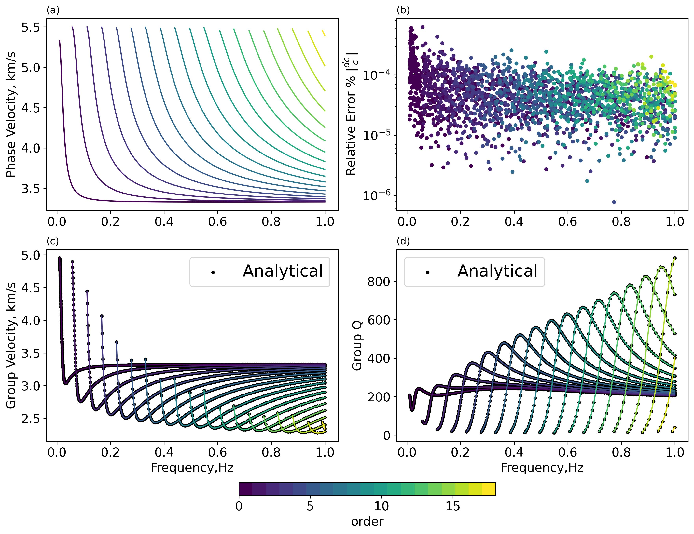
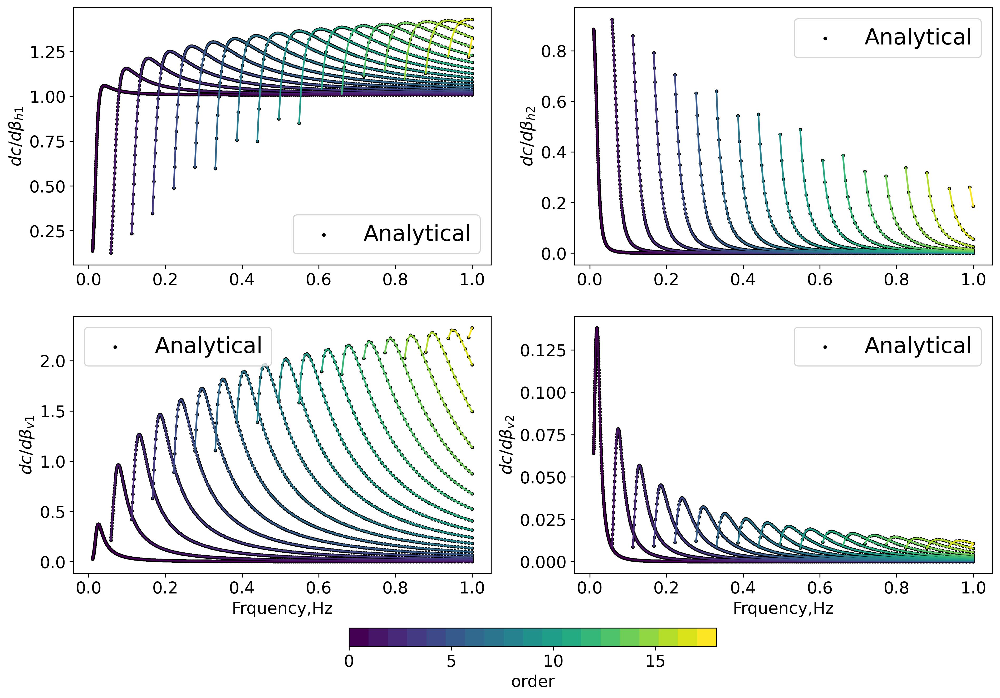
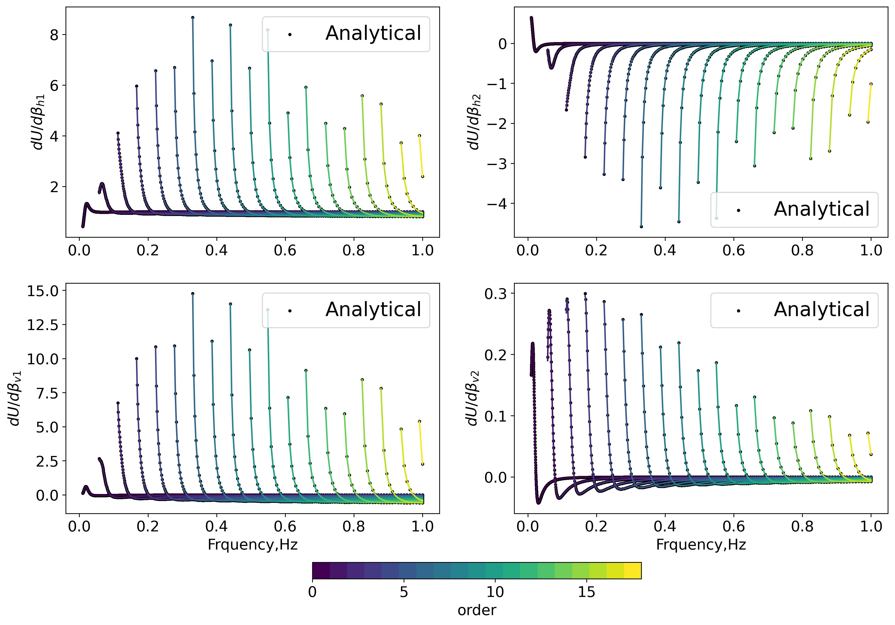
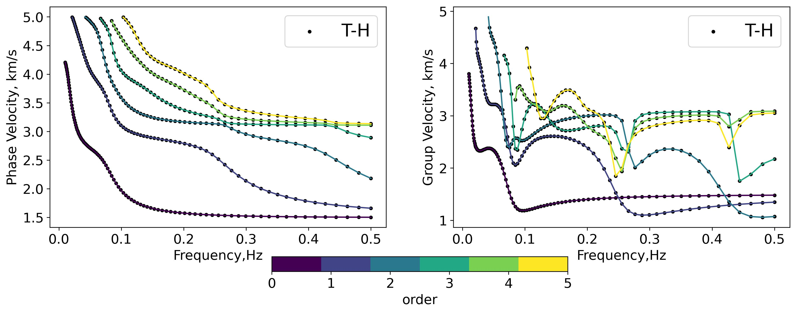
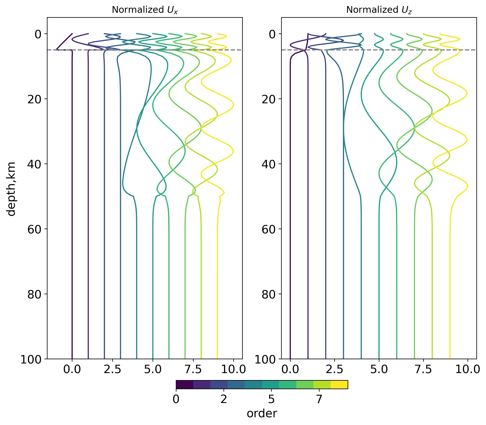
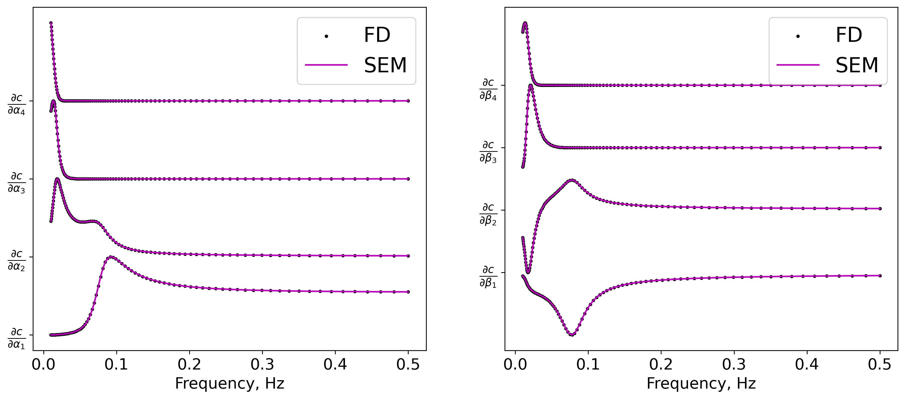
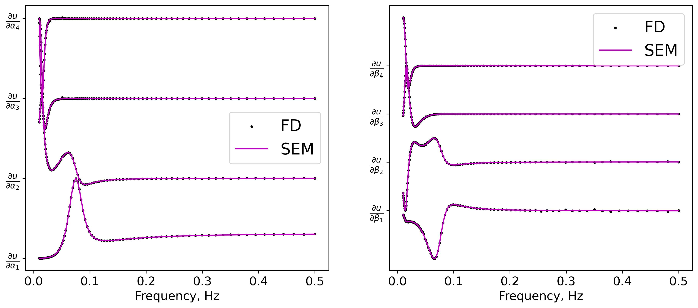

Gallery
Two layer Love wave Model
Layer Number |
h |
$\rho$ |
$\beta_{v}$ |
$\beta_{h}$ |
$Q_L$ |
$Q_N$ |
|---|---|---|---|---|---|---|
1 |
35 |
2.8 |
3.0 |
3.3 |
220 |
200 |
2 |
$\infty$ |
3.2 |
5.0 |
5.5 |
330 |
300 |

Benchmark of phase/group/group Q ith Analytical Solution
Benchmark of phase velocity sensitivity kernels ith Analytical Solution
Benchmark of group velocity sensitivity kernels ith Analytical SolutionScholte Wave example
Layer Number |
h |
$\rho$ |
$\alpha$ |
$\beta$ |
|---|---|---|---|---|
1 |
5 |
1.0 |
1.5 |
0 |
2 |
45 |
2.57 |
5.22 |
3.1 |
3 |
50 |
2.95 |
6.94 |
4.0 |
2 |
$\infty$ |
3.57 |
5.0 |
8.75 |

Benchmark of phase/group/ velocities with CPS330.
Normalized eigenfunctions
Benchmark of phase velocity derivativates with FD approximation
Benchmark of group velocity derivativates with FD approximation